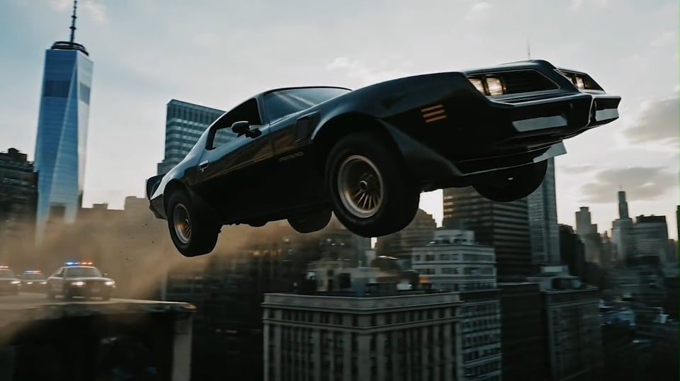

ŒUVRE 01Duel
01
Duel
Fiction · IA générative
Un face-à-face dans un décor de western, où les regards, la tension et les mouvements du combat construisent la scène.
ŒUVRE 02 / Bande-annonce · Fiction
Une bande-annonce qui s’appuie sur les visages, les regards et les atmosphères pour installer un univers de fiction.

NOTE DE LECTURE / 02
Les expressions et la lumière sur les visages installent l’atmosphère de la fiction.
ÉCHOS / AUTRES ŒUVRES
Fiction · IA générative
Un face-à-face dans un décor de western, où les regards, la tension et les mouvements du combat construisent la scène.

Fiction · IA générative
Une séquence d’action urbaine, avec une voiture propulsée au-dessus de la ville. Un travail sur le mouvement, l’espace et le cadrage.